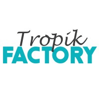
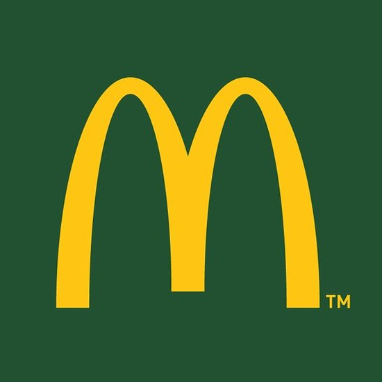
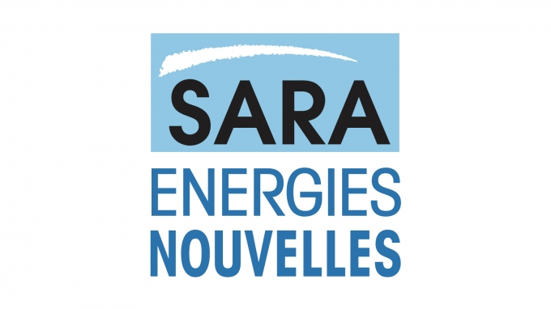

My work experiences in a nutshell
Offer manager | Sept 2021 – Today
Schneider Electric | Grenoble
As part of the digital transformation project of low and medium voltage Spare Parts business:
- Range and product-page traffic analysis and recommendation
- Benchmark of e-commerce Spare Parts market and best practices of competitors reporting
- Customer Journeys A/B testing with country manager
- Product photoshoot organization
- Spare Parts Offer manager Assistant (presentation design, Spare Parts order placement)
Digital marketing project manager assistant | Feb. – June 2021
La Route des Rhums | Fort-de-France

- Content creation: product sheets, brand and category pages writing (SEO)
- Community management: social media, newsletters writing, media planning and posts (Facebook and Instagram)
- Before and after sales customer services
- Participation in website promotion and SEA acquisition strategy
Marketing assistant | July – Aug. 2020
McDonald’s FWI – Le Lamentin

- “Happy Birthday” CRM Project Manager
- Coordination between the 4 communication agencies (online & offline) including brief writing, recommendations and validation of visuals
- Coordination and organization of events with Online andcommunication agencies
offline marketing campaign reporting and recommendations
- Media planning creation and supervision
- Budgeting and stock management
- Benchmarking of the fast-food market
Project Manager assistant | Feb. - June 2019
Société Anonyme de Raffinerie des Antilles – Le Lamentin

- Project management file creation
- Creation of a Provider Selection Assistance File
- Content creation and corporate communication articles writing
My education
Digital Marketing & Data Master’s Degree | 2021 - 2022
International Management Master’s Degree | 2019 - 2021
Business & Management Bachelor’s Degree | 2016 - 2019
My other skills
Languages
French : Native
English : Fluent
Spanish : Intermediate
HTLM : Beginner
CSS : Beginner
SaaS
AT Internet
Figma
Final Cut Pro
HubSpot
Prestashop
Trello
My hobbies & interest
Hiking 🏃🏾♀️
Tutoring 👩🏾🏫
Graphic Desing👩🏾💻